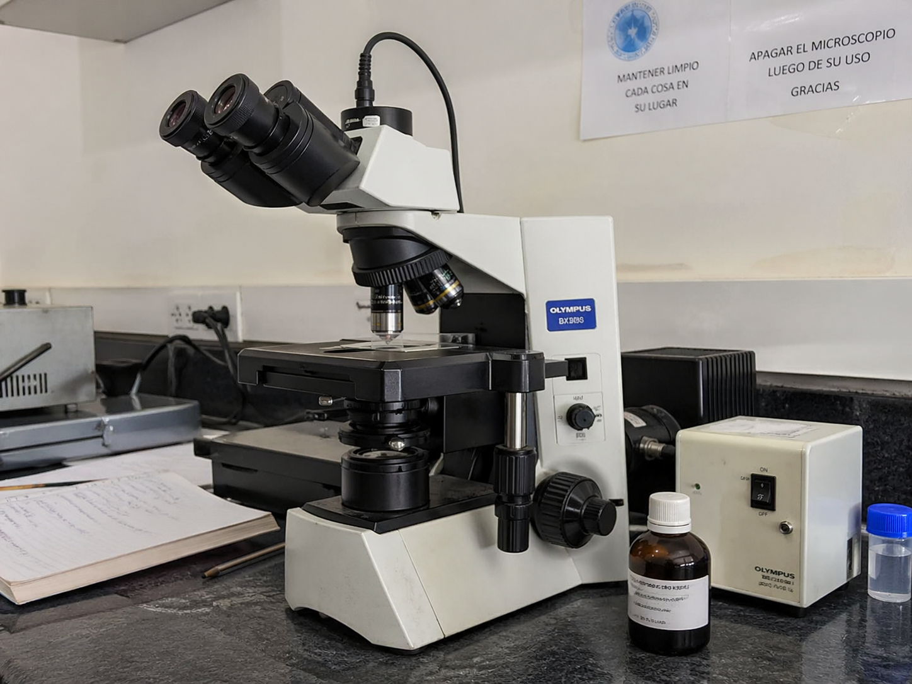

Quienes Somos
CHOPPERLAB es un laboratorio clinico ficticio especializado en el analisis de muestras biologicas para el apoyo diagnostico de profesionales de la salud. Contamos con tecnologia de ultima generacion y un equipo altamente capacitado.
Mision
Brindar servicios de laboratorio clinico de alta calidad, con resultados oportunos y confiables, contribuyendo al diagnostico y tratamiento oportuno de los pacientes atendidos en las instituciones de salud.
Vision
Ser el laboratorio clinico de referencia a nivel nacional, reconocido por la excelencia en la calidad de sus analisis, la innovacion tecnologica y el compromiso con la salud de la poblacion peruana.
Nuestra Historia

Fundado en 2010, CHOPPERLAB inicio operaciones con un pequeno equipo de bioquimicos comprometidos con la calidad. Hoy contamos con 4 sedes en Lima y mas de 50 profesionales especializados.
Nuestros Valores
- Calidad y precision en cada analisis
- Compromiso con el paciente
- Innovacion tecnologica constante
- Etica profesional y transparencia
- Trabajo en equipo y colaboracion
Nuestro Equipo Directivo
| Nombre | Cargo | Especialidad | Anos de experiencia |
|---|---|---|---|
| Dra. Pamela Bautista | Directora General | Medicina Interna | 20 anos |
| Lic. Sonia Huaman | Jefa de Laboratorio | Bioquimica Clinica | 15 anos |
| Lic. Julio Mosquera | Coordinador de Calidad | Microbiologia | 12 anos |
| Lic. Jannet Ramos | Jefa de Hematologia | Hematologia Clinica | 10 anos |